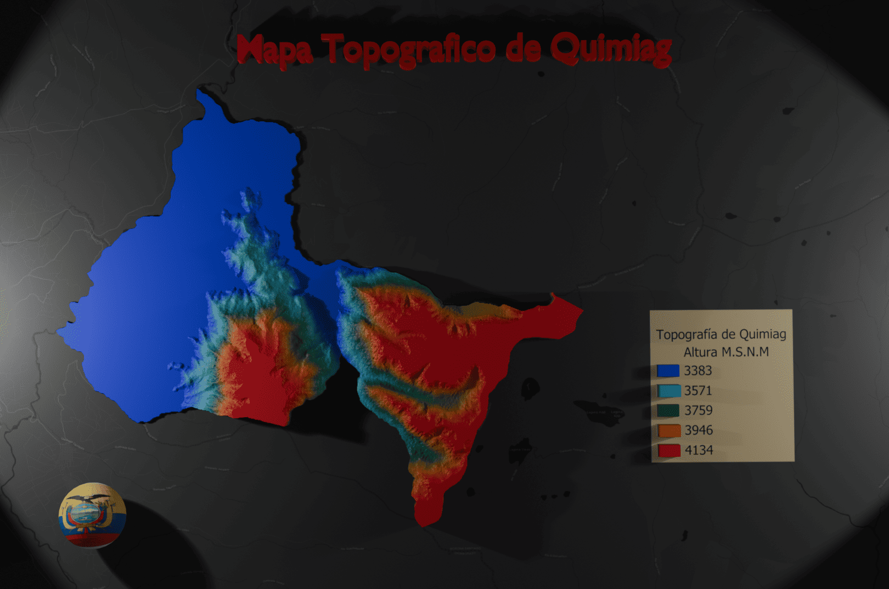
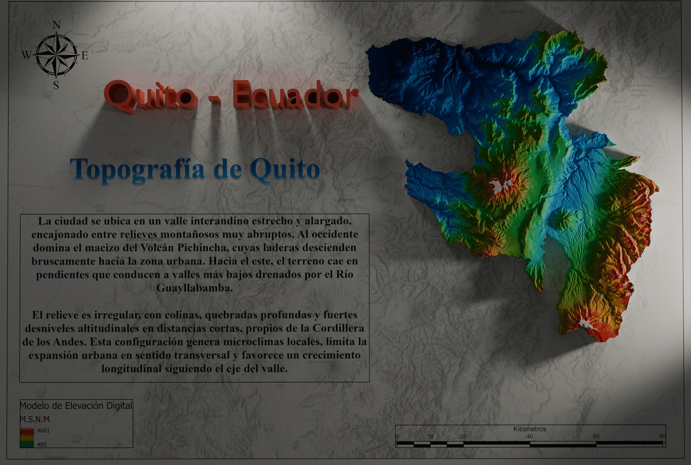
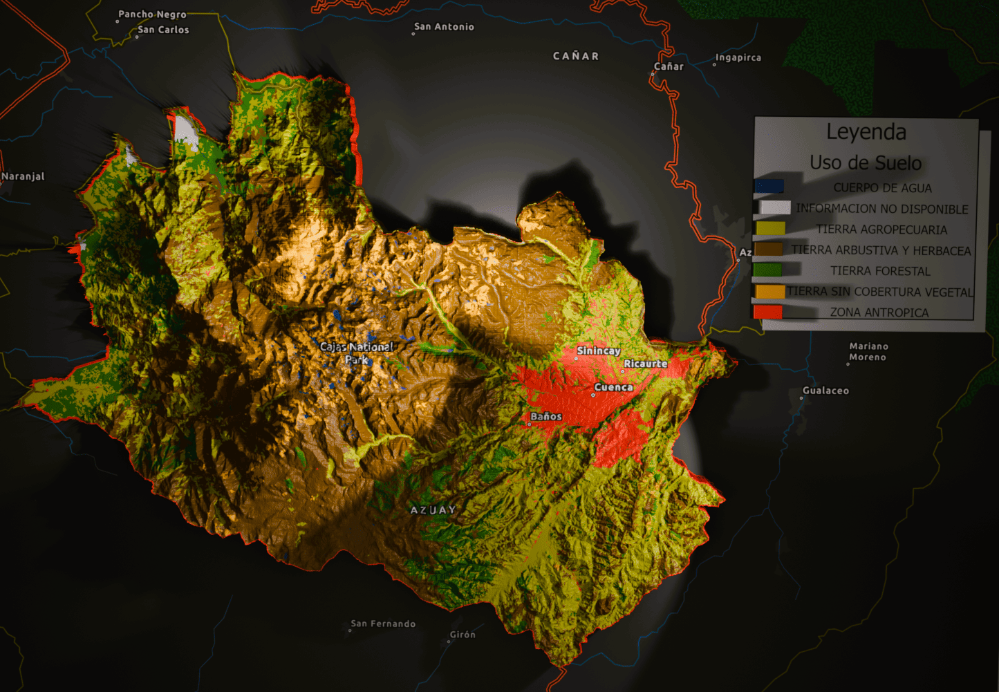
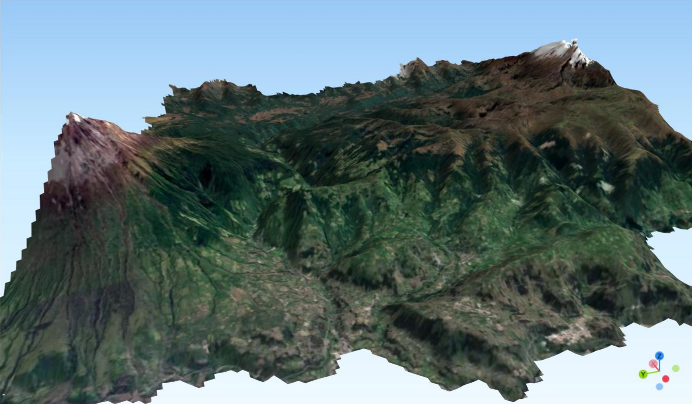

Blender 3D
Modelo de Elevación - Quimiag
Renderizado tridimensional del relieve de la parroquia Quimiag, integrando texturas satelitales y sombreado.
🔍 Ver en Alta Resolución— Bienvenido al portafolio de
Análisis geoespacial avanzado • Teledetección • Modelamiento 3D del territorio
Explorar ProyectosModelos tridimensionales de alta resolución para análisis territorial.

Renderizado tridimensional del relieve de la parroquia Quimiag, integrando texturas satelitales y sombreado.
🔍 Ver en Alta Resolución
Renderizado tridimensional del relieve de la ciudad de Quito y sus alrededores, destacando la morfología del terreno.
🔍 Ver en Alta Resolución
Renderizado tridimensional del relieve de la ciudad de Cuenca y su entorno geográfico, resaltando la topografía de la zona.
🔍 Ver en Alta ResoluciónExperiencias inmersivas de navegación espacial en tiempo real.

Visualización interactiva del Modelo de Elevación Digital (DEM) y superficie del cantón Penipe, Chimborazo.
🌍 Explorar Mapa en 3DVisualización interactiva del Modelo de Elevación Digital (DEM) y relieve estratovolcánico del Monte Fuji, Japón.
🌍 Explorar Mapa en 3D
Análisis interactivo del relieve y la compleja orografía de la provincia de Chimborazo mediante modelos digitales de elevación.
🌍 Explorar Mapa en 3DAnálisis multiespectral y monitoreo ambiental desde plataformas satelitales.
Serie multitemporal del índice de vegetación normalizado sobre cobertura agrícola.
Análisis multitemporal para identificar cambios en uso y cobertura del suelo.
Mapa de cobertura terrestre generado mediante algoritmos de Machine Learning.